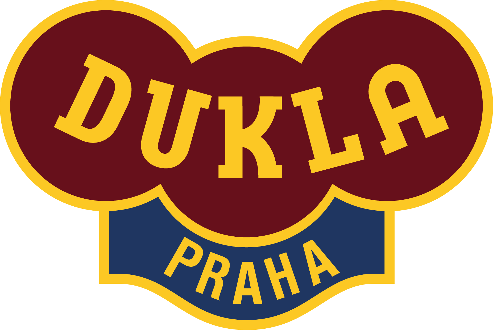

Miroslav VRAŠTIL
- 
- Datum narození: 1. 1. 1984
- Místo narození: Olomouc
- Věk: 40
- Začátek kariéry: 2009
- Disciplíny: 4x LM, 2x LM
- Mateřský klub: VK Olomouc
Všechny tyto metriky jsou ale zavádějící. Typicky doba strávená na stránce. Kdo říká, že 5 minut je dobře a 20 sekund špatně? Čtenáři s pětiminutovou návštěvou dost možná zoufale hledají informace a poté naštvaně odchází. Ti, kteří jsou hotoví za pár sekund, možná rychle našli potřebnou informaci a odchází naprosto spokojení. Podobně člověk, který dočetl článek až do konce – třeba byl jen hodně trpělivý a snažil se najít odpověď na svůj dotaz, byť ho nakonec nenašel. Naopak ten, co se už z perexu dozvěděl vše podstatné, odchází z textu s radostí. Nenavádíme vás k tomu, abyste tyto metriky okamžitě přestali řešit. Jen jejich význam moc nepřeceňujte.